Operating Documentation
Direction 5500113, Rev# 3
Discovery MR450 1.5T Service Methods
Module Version 6.0, Version Date 2/8/10
Operating Documentation |
| Required Persons | Preliminary Reqs | Procedure | Finalization |
|---|---|---|---|
| 1 | Included in Procedure | 120 or 160 hours | Included in Procedure |
Ice can form in the Shim Lead Assembly, Shim Lead Connector, Instrumentation Connector and the Vent Plumbing because of the cryo-pumping of air entering through a ruptured Burst Disc, open Fill, Vent or Ramp Lead Ports, or leaks at relief valves, plumbing joints and fittings. Ice tends to form on the cold walls and platform of the Vertical Penetration and at the entry of the shield exhaust plumbing.
Icing of the Recondenser can also result from the migration of ice and moisture into the colder areas of the cryostat. Ice in the Vertical Penetration may result in a minor thermal short, causing an increase in Cryocooler temperature and magnet pressure and/or the inability to install the Ramp Leads or Fill Stinger. Ice plugs in the plumbing will restrict or prevent venting through cryostat Vent Valve V2 or the Shield Coil Vent Valve V3. An ice plug in the Recondenser will interfere with the recondensing cycle and result in a temperature drop at the Cryocooler and Recondenser, and a simultaneous pressure increase in the cryostat.
Before proceeding, perform the following:
Check the flow through Vent Valve V2. If the flow from V2 is restricted, do not open any other ports.
Check the vessel pressure reading on the mechanical gauge and on Magnet Monitor. Turn off the Coldhead and check if pressure builds over time.
If there is no flow from V2 and no increase in vessel pressure with the Coldhead off, immediately contact your MAC Team Representative before continuing.
Follow these guidelines:
Maintain a positive pressure inside the cryostat, and make routine leak checks to minimize cryo-pumping and ice formation. See Temperature, Pressure and Leak Troubleshooting.
When resistance measurements of the magnet's electrical circuits are performed in conformance with Magnet Electrical Checks and the resistance readings are open or intermittent, it is usually due to icing in the P100 Shim Lead Connector.
Use the Troubleshooting Guide in Temperature, Pressure and Leak Troubleshooting to determine the location and extent of the suspected ice before starting any Ice Removal procedure.
Make sure all DANGERS, WARNINGS and CAUTIONS are complied with before starting any Ice Removal procedure.
| Item | Qty | Effectivity | Part# | Manufacturer | |
|---|---|---|---|---|---|
| 3.0T Warning Sign & Label Kit | 1 | - | 2379494 | - | |
| Portable Oxygen Monitor | 1 | - | 2287000 | - | |
| Cryogen Safety Wear Kit | 1 kit/person | - | 46-271137G1 | - | |
| Nonabsorbant Protective Clothing (long sleeve shirt and pants) | 1 set/person | - | - | - | |
| Nonferrous Safety Shoes | 1 pr./person | - | - | - | |
| Brass Master Padlock with Brass Shackle | 1 | - | 46-194427P320 | - | |
| Brass Master Transition Padlock | 1 | - | 2387081 | - | |
| Black & White on Red Lockout Tag | 1 pkg. of 25 | - | 46-194427P322 | - | |
| Transition LOTO Tag | 1 | - | 46-194427P313 | - | |
| Line Cord Plug Cover, Plugs ≤3 in. (76 mm) wide x ≤5.875 in. (149 mm) long, Cords ≤1.25 in. (31 mm) diameter | 1 | - | 46-194427P321 | - | |
| Digital Voltmeter (DVM), Volt-Ohm Meter (VOM) or noncontact voltage tester | 1 | - | - | - | |
| Helium Regulator and Hose Kit | 1 | - | 46-306734G1 | - | |
| Flexible Helium Hose, 40 ft. (12.2 m) | 1 or 2 | - | 46-271135P1 | - | |
| Nonmagnetic Gas Cylinder Cart | 1 | - | 46-306717G1 | - | |
| Nonmagnetic Helium Cylinder Cart | 1 | - | 46-258150P1 | - | |
| RuO Temperature Monitor 2171219 (included and contents listed in RuO Temperature Monitor Kit 2183710) or Lakeshore 208 Digital Thermometer Kit 46-301477G2 (contents listed in Digital Thermometer Kit 46-301477G2) | 1 | - | 2171219 or 46-301477G2 | - | |
| Deicing Tools Kit (contents listed in Deicing Tools Kit 5263845) | 1 | - | 5263845 | - | |
| Universal Coldhead Replacement Tool Kit (contents listed in Coldhead Replacement Tool Kit 2300306-2) | 1 | - | 2300306-2 | - | |
| Composed of : | |||||
| Coldsleeve Heater Kit (replaces Plexiglas Cover Plate & Heater Assembly 2303715) | 1 | - | 5180672 | - | |
| LCC300 Coldhead Insertion/Removal Tool (contents listed in 3T Coldhead Transport Kit 2385069) | 1 | - | 2348452 | - | |
| Sav-Con & Instrumentation Lead Tool Kit (contents listed in Sav-Con & Instrumentation Lead Tool Kit 46-294872G3) | 1 | - | 46-294872G2 | - | |
| Composed of : | |||||
| Lexan Penetration Cover Plate | 1 | - | 46-294765G1 | - | |
| Connector Insertion/Removal Tool | 1 | - | 46-281934P1 | - | |
| 50 ft. (15.24 m) Auxiliary Rampdown Cable | 1 | - | 2217315 | - | |
| Tygon Tubing, 20 ft. (6.1 m) | 1 | - | - | - | |
| Coil Copper Tubing, 6 ft. (2 m) | 1 | - | - | - | |
| Heat Gun | 1 | - | 46-306830G3 | - | |
| Portable Leak Detector (optional) | 1 | - | 2270571 | - | |
| Flashlight | 1 | - | - | - | |
| Titanium Tool Kit: Basic Set 5113258, Installation Set 5112581, or other nonferromagnetic tools (magnets with magnetic fields >1.5T) | 1 kit | - | 5113258 or 5112581 | - | |
| HDv Service Platform | 1 | - | 5155291-2 | - | |
| Service Methods documentation for the magnet/enclosures (available through the Common Documentation Library at gehealthcare.com or your local GE Healthcare Service Representative) | 1 | - | - | - | |
| Item | Qty | Effectivity | Part# | Manufacturer |
|---|---|---|---|---|
| Gaseous Helium, 235 SCF Nonmagnetic Cylinder with Regulator | 4 | - | - | - |
| Leak Detection Fluid (e.g., Snoop, Bird Dog Quart Spray P/N DOG-1Q, Big Blue P/N Rt100S or Rt100G, or LeakTec) | 1 | - | - | - |
| ||||
| Potential Fatal Injury! | ||||
| before and while performing ice removal: | ||||
|
| ||||
| Potential Fatal Injury! | ||||
| before starting ice removal: | ||||
| Have all Work Assistants or Observers comply with the Buddy System Requirements & Certification subsection of “2301164PRE MR Magnet Safety Requirements”. |
| ||||
| Fatal Explosive Hazard! | ||||
| Gas cylinder rupture/damage or opening cylinder valve fast will release 2400 psi gas from cylinder. | ||||
| Make sure gas cylinders are secure from falls and away from moving objects before using. Always open cylinder valve slowly. |
| ||||
| Potential Magnet Quench! | ||||
| A magnet quench during Ice Removal could result in rapid expulsion of liquid helium through the Vertical Penetration. | ||||
| Make sure magnet is ramped down to zero field before starting portions of the ice removal procedure. |
| ||||
| Asphyxiation Hazard! | ||||
| Odorless, colorless helium gas that displaces oxygen in the air is generated during Ice Removal. | ||||
| Make sure magnet room vent exhaust fan is on before starting ice removal. |
| ||||
| Potential Cold Burn or Asphyxiation Hazard! | ||||
| Internal cryostat pressure build-up to >5.25 psig will open the 5.25 psig relief valve. | ||||
Before removing either Ramp or Fill Port Caps or loosening
any component resulting in the release of cryogen pressure:
|
| ||||
| Potential Cold Burn Hazard! | ||||
| Exposure to Cryogens and contact with cold objects is possible during Ice Removal. | ||||
| Wear protective clothing, nonabsorbent gloves and goggles when performing ice removal. |
| ||||
| Electrical Shock Hazard! | ||||
| Contact with connectors leading to an energized Compressor can cause electrical shock. | ||||
| Whenever the input power to the Compressor is disconnected, follow OSHA Lockout/Tagout (LOTO) procedures to make sure power is not supplied to the Compressor. |
| ||||
Observe the following:
| ||||
| ||||
| Service Platform with side shield must be installed when working
on the magnet to protect side-mounted components from damage. Illustration 1: Service Platform with Side Shield Installed
| ||||
| NOTE: | If the site has Magnet Monitor proprietary software, connect to the Magnet Monitor and turn off the alarm for vessel pressure. Turn the vessel pressure control to a high value of 0.5 psig and a low value of 0.4 psig. |
| Condition | Reference | Effectivity |
|---|---|---|
Make sure the area is secure and that ALL required Warning Signs are posted to meet the safety requirements stated in the following document before starting Ice Removal. | - | |
Removal of some magnet enclosure components may be required to complete Ice Removal. Refer to Enclosure Removal and Installation, the document below and the appropriate Service Methods documentation (available through the Common Documentation Library at gehealthcare.com or your local GE Healthcare Service Representative) before continuing. | - | |
Make sure the Magnet Room exhaust fan is on/operational and the Magnet Room door is propped open before starting Ice Removal. | - | - |
This entire procedure is used to remove ice from the Sav-Con Connector so the Shim Lead can be reseated without ramping the magnet down. The following items are required:
Table 1: Tools and Equipment
| Item | Part Number |
| Universal Deicing Kit | 5263845 |
| Flow Meter | 5268307 |
| 20 ft. Gas Hose | 5266224 |
| 3 ft. Gas Hose with Shim Adaptor | 5270565 |
| Shim Supply and Cables | 46-260777G3 |
| 1 cylinder of Helium Gas | |
| ||||
| This operation MUST only be performed by a ZSE or MAC Team Leader. Make sure there are no magnetic cylinders or carts near the magnet before beginning the ice removal procedure. The magnet should have a minimum helium level of 85%. | ||||
One to two days prior to starting to deice, reduce the vessel pressure to less than 0.4 psig by resetting the operating pressure on the MM3 between 0.2 to 0.4 psig if possible. (This will save having to vent the magnet down and loosing a lot of liquid helium.)
Open Vent Valve V2. Once the magnet pressure is less than 0.2 psig, open the Nupro Valve on the Shim Lead, and slowly lower the Shim Lead until it reaches the top of the Sav-Con Connector or ice.
Illustration 2: Location of V2 and Nupro Valves
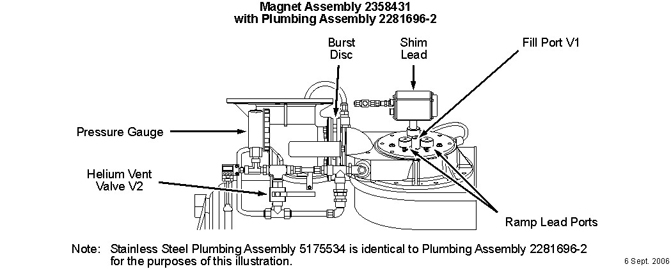
Connect the 20 ft. gas line to the 3 ft. gas line.
Connect the flow meter and helium gas hose to the bottle of helium gas as shown below, and purge gas line with the helium gas.
Illustration 3: Flow Meter and Gas Hose Connections
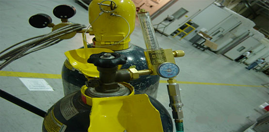
Connect the helium gas hose to the Nupro valve on the Shim Lead, and leave the Nupro Valve closed.
Illustration 4: Helium Gas Hose Connected to Nupro Valve
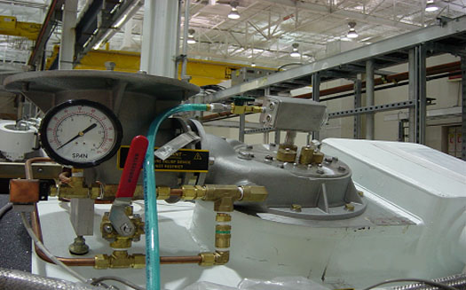
| ||||
| Possible quench may occur if the gas helium flow rate of 140 cfh is exceeded. | ||||
Using the scale marked 20 to 140 for helium, set the flow rate on the flow meter to 80 cfh. (It may take several attempts to clear all the ice from the Sav-Con Connector.)
Open Helium Vent Valve V-2 so as not to increase pressure in magnet
Slowly open the Nupro valve, and watch the pressure on the magnet to make sure it stays below 0.5 psi.
Let the helium gas flow over the Sav-Con Connector for one (1) minute.
Turn off the gas helium and check that the shim lead lowers into the Sav-Con. Make sure the Shim Lead is aligned with the keyway.
| ||||
| Possible quench may occur if the gas helium flow rate of 140 cfh is exceeded. | ||||
If the shim lead will not seat, continue with the helium gas and set the flow meter to 140 cfh for two (2) minutes. Repeat if necessary.
Once a good fit is achieved on the Sav-Con Connector, verify ample continuity exists on all the correction coils, then disconnect the helium gas line from the Shim Lead ensuring the Vent Valve V2 and Nupro Valve are completely closed. (See Illustration 2.)
If unable to clear the Save-Con Connector, contact the Magnet Plant in Florence, South Carolina for further instructions.
| ||||
Observe the following:
| ||||
Either turn Magnet Monitor power off or disable the Magnet Monitor's master alarm and vessel Pressure control. (This will prevent false alarms and long-term heater operation.)
Make sure the Shim Lead is disengaged, then engage the Shim Lead in conformance with Shim Lead Engagement and Disengagement.
Perform Shim Coil resistance checks per Magnet Electrical Checks.
If the checks are successful, deicing is not required.
If the checks are not successful or the Shim Lead cannot be engaged, proceed to the next step.
Ramp down the magnet (if at field) using the 50 ft. (15.24 m) Auxiliary Rampdown Cable 2217315 in conformance with the Preparation for Rampdown subsection of Magnet Rampdown to Zero Field.
Turn Off the Cryocooler to prevent ice migration into the Recondenser:
Turn On (upward I position) the Coldhead Drive Switch on the Compressor's back panel.
Illustration 5: Views of CSW-71D Compressor

Place the Drive Switch on the Compressor's front panel in the O (downward off) position.
Run the Coldhead for only 10 seconds with the Compressor turned off to prevent pressure build-up in the Coldhead, then turn Off the Coldhead Drive Switch and the Compressor's Main Power Switch.
| ||||
| Electrical Shock Hazard! | ||||
| Contact with connectors leading to an energized Compressor can cause electrical shock. | ||||
| Whenever the input power to the Compressor is disconnected, follow lOTO procedures to make sure power is not supplied to the Compressor. |
Disconnect and LOTO input power to the Compressor. Verify that no voltage is present by using a DVM or equivalent measuring device.
Vent the magnet down to 0.2 psig by opening/closing Vent Valve V2.
Illustration 6: Helium Vent Plumbing
Assemble the regulator and Tygon tubing to a helium cylinder. Remove the orifice plug and nut at the end of the Shim Lead Nupro Vent Valve, and assemble the other end of the Tygon tube over the exhaust stem.
Illustration 7: Warming Shim Lead
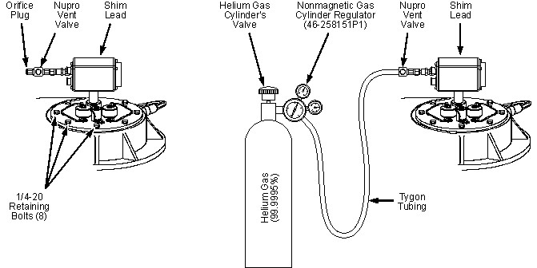
Partially open Vent Valve V2, and immediately open the NuPro Vent Valve. Blow warm helium gas through the Shim Lead at 4 psig for five (5) minutes with the Shim Lead engaged/partially engaged.
Attempt to engage the Shim Lead Connector. If successful:
Close the Nupro Vent Valve and Vent Valve V2
Perform Shim Coil resistance checks per Magnet Electrical Checks.
Remove the Tygon tubing, and replace the orifice plug and nut.
If the checks are successful, deicing is not required.
If the checks are not successful or the Shim Lead cannot be engaged, proceed to the next step.
Disengage the Shim Lead and lock it in the Up position in conformance with Shim Lead Engagement and Disengagement.
Make sure magnet pressure is 0.2 psig, venting the magnet as required.
| ||||
| Perform the next two steps rapidly to prevent cryo-pumping of air into the Vertical Stack. Make sure Lexan Cover Plate 46-294765G1 is on the Service Platform and the holes are plugged before removing the Shim Lead Assembly. | ||||
Loosen and remove the eight 1/4-20 retaining bolts (identified in Illustration 7), and remove the Shim Lead Assembly.
Immediately cover the Vertical Penetration with Lexan Penetration Cover Plate 46-294765G1, and align the scribe mark toward the Vent Adaptor.
Secure the Lexan Penetration Cover Plate onto the Vertical Penetration with the eight 1/4-20 retaining bolts removed earlier.
Attach Deicing Purge Tube 2347725 to the end of the Tygon tubing. Purge the tube at 4 psig.
Remove the plugs on the Cover Plate, and insert the Deicing Purge Tube through the hole closest to the Shim Lead Connector.
Illustration 8: Purge Tube Insertion
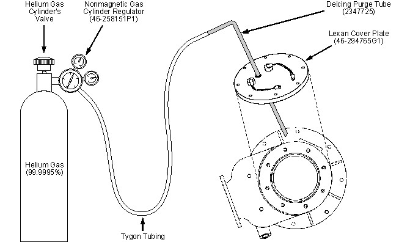
Remove ice by directing an 8 to 10 psig flow of warm helium gas onto the Shim Lead connector inside the Vertical Penetration and other affected areas while Vent Valve V2 is partially open.
Shine the flashlight through the Lexan Penetration Cover Plate; verify that all ice is removed inside.
Remove any remaining ice on the inside of the Vertical Penetration. Some bending of the Deicing Purge Tube may be required.
Shine the flashlight through the Lexan Penetration Cover Plate. When all ice is removed, close V2 and remove the Lexan Cover Plate.
Temporarily disconnect the Instrumentation Lead Connector using the Connector Insertion/Removal Tool 46-281934P1.
Direct a 8 to 10 psig flow of warm helium gas at the connector until all ice is removed, then reconnect the Instrumentation Lead Connector.
Replace the Shim Lead Assembly in conformance with Shim Lead and Baffle Replacement.
Perform Shim Coil resistance checks per Magnet Electrical Checks. If the checks are not successful, replace the Shim Lead Sav-Con Connector in conformance with Sav-Con Connector Replacement.
| ||||
| Perform all MRU checks in the Magnet Rundown Unit (MRU) Checks upon completion of Vertical Penetration ice removal to make sure no Instrumentation Lead Connector damage has occurred. Correct any damage found by reconnecting the Instrumentation Lead Connector or replacing the Instrumentation Lead Assembly. | ||||
Check the Instrumentation Lead Connector by performing the MRU checks in Magnet Rundown Unit (MRU) Checks.
After completing the above step, remove LOTO and connect input power to the Compressor, and turn On the Cryocooler.
Leak check the magnet in conformance with Temperature, Pressure and Leak Troubleshooting. Repair any leaks found.
Return the Magnet Monitor to normal operation by re-enabling the Magnet Monitor's master alarm and vessel pressure control or by turning Magnet Monitor power on.
This procedure is performed when the quantity of ice in the magnet prevents interaction with the ramp pins or the fill port in the penetration. Ice buildup is usually due to an air leak somewhere. It is advisable to locate the leak and correct it.
Reduce the vessel pressure down to ≤ 0.2 psi by opening Vent Valve V2.
Slowly insert the Noninsulated Coring Tool (2280035) into either the (+) ramp port or (-) ramp port.
Once the ice buildup stops the tool, rotate the tool back and forth while gently pushing down. (The sawing action will cut through the ice down to the top of the ramp pin.)
Illustration 9: Ramp Port Deicing - Noninsulated Tool
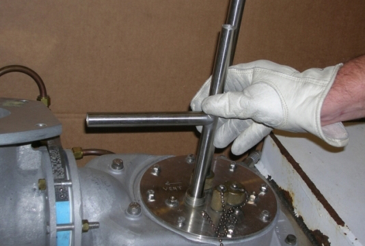
Remove the tool once it has hit bottom, and use Insulated Ramping Port Tool (5248857) with the same motion. (The tool will cut through the remaining ice to the bottom of the pin.)
| NOTE: | There is an indicator line on the tool that allows the user to determine how deep to go in the penetration. There are two lines, one for LCC and one for SIV, both clearly marked on the rod to avoid confusion. Do not allow the tool to go any deeper than this line. |
Illustration 10: Ramp Port Deicing - Insulated Tool
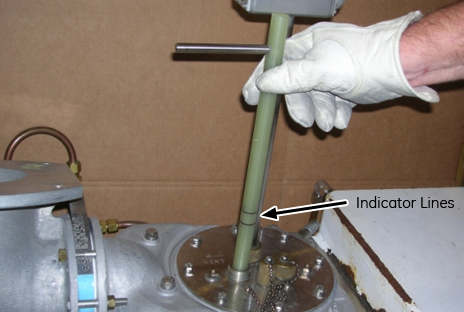
Repeat the process for the other port, and remove the tool.
To deice the fill port, insert the Noninsulated Tool (5248765) slowly into the fill port of the magnet.
Once the ice build-up stops the tool, rotate the tool back and forth while gently pushing down. (The sawing action will cut through the ice down to the top of the fill tube.)
Illustration 11: Fill Port Deicing - Noninsulated Tool
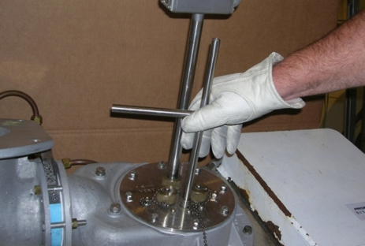
Remove the tool once it has hit bottom, and use Insulated Fill Port Coring Tool (5248857) with the same motion. (The tool will cut through the remaining ice to the bottom of the fill tube.)
Illustration 12: Fill Port Deicing - Insulated Tool
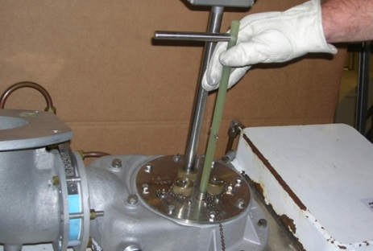
Remove the tool.
In the situation where a magnet is sited in a low ceiling environment, the Ramp Port Coring Tool (5248766) and Fill Port Coring Tool (5248851) are used. The tool requires a three-step insertion process. The pictures below are for the fill port; the ramp port process is the same.
Insert the bottom piece.
Illustration 13: Fill Port Deicing in Low Ceiling Condition - Inserting Bottom Piece of Tool
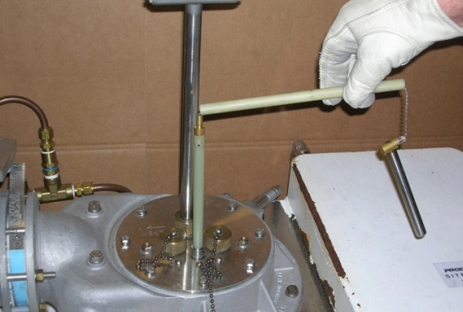
Thread the middle shaft onto the bottom shaft.
Illustration 14: Fill Port Deicing in Low Ceiling Condition - Inserting Middle Piece of Tool
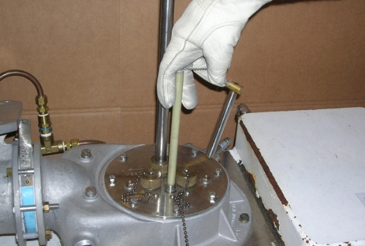
Screw the top onto the middle shaft.
Illustration 15: Fill Port Deicing in Low Ceiling Condition - Inserting Top Piece of Tool
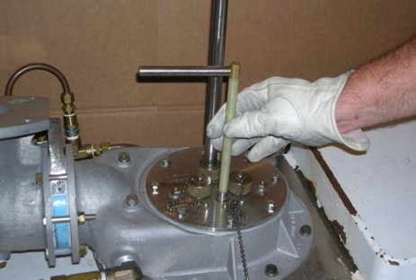
Once the ice build-up stops the tool, rotate the tool back and forth while gently pushing down. (This motion will cut through the ice.)
Repeat the above process for the ramp ports, and remove both tools when finished..
Recondenser Deicing contains four procedures: Level One Deicing, Level Two Deicing, Level Three Deicing, and Level Four Deicing for clearing ice from the Recondenser. Each procedure involves greater cost and more down time than the previous one. The first two procedures do not require a magnet ramp-down, while the third and fourth do. The fourth procedure also requires a magnet warm-up and a dry nitrogen purge. Always evaluate the magnet starting with the first procedure and progressing through no more procedures than required to clear the ice.
| ||||
| Check the flow through Vent Valve V2. If the flow from V2 is restricted, slightly open the Fill Port. If there is no flow from V2 or the Fill Port, immediately contact your MAC Team Representative before continuing. | ||||
Evaluate the magnet's condition before taking any action involving changes to the magnet operating condition. Before continuing, confirm that the magnet is not operating in Controlled Zero Boil-Off (C0BO) condition, where the heater maintains the magnet pressure at 4 psig (±0.1 psig.
Verify that the Magnet Monitor functions properly for C0BO operation. Correct any problems found and recheck for C0BO operation per the previous step.
Verify flow through the shield vent line either by frost on the 5.25 psig relief valve line at point “A" in or momentarily cracking the 1/2 in. NPT plug at point “B".
Illustration 16: 5 psig Relief Valve Plumbing
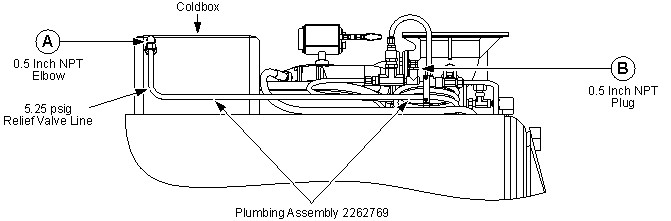
Determine if the second-stage Coldhead temperature is ≤4.0K.
If the shield vent line is blocked, remove and inspect the 5.25 psig relief valve. Remove any blockage and reinstall the valve.
If the shield vent line is still blocked and/or the Coldhead temperature is ≤4.0K, proceed to the next section, Level One Deicing.
This Level One Deicing procedure simply shuts down the Coldhead, denies cooling flow to the Recondenser, and expands shield-trapped gas back through the Recondenser. No special tools are required.
| ||||
| Make sure the Coldhead is off during Level One Deicing to prevent any re-icing of purged contaminants in the Recondenser. | ||||
Verify that the helium level is <90% with ≥4.0 psig or <85% at 1 to 2 psig.
| NOTE: | LHe levels greater than those specified above could result in an overfill condition, and block the Recondenser cycle. |
If the pressure is ≥4.0 psig, partially open Vent Valve V2 (shown in Illustration 6), and vent down to 4 psig so that the 5.25 psig relief valve closes.
| NOTE: | No venting should occur through the 5.25 psig Relief valve line during Level One Deicing. |
Shut down the compressor as follows to prevent pressure build-up in the Coldhead:
Turn On (upward I position) the Coldhead Drive Switch on the Compressor's back panel.
Illustration 17: Views of CSW-71D Compressor
Place the Drive Switch on the Compressor's front panel in the O (downward, off) position.
Run the Coldhead for only 10 seconds with the Compressor turned off to prevent pressure build-up in the Coldhead, then turn Off the Coldhead Drive Switch and the Compressor's Main Power Switch.
| ||||
| Electrical Shock Hazard! | ||||
| Contact with connectors leading to an energized Compressor can cause electrical shock. | ||||
| Whenever the input power to the Compressor is disconnected, follow loto procedures to make sure power is not supplied to the Compressor. |
Disconnect and LOTO input power to the Compressor. Verify that no voltage is present by using a DVM or equivalent measuring device.
Monitor the Coldhead temperature. When it stabilizes at an elevated temperature (>80K), check for helium gas flow through the 5.25 psig relief valve (indicating the blockage has cleared).
| NOTE: | Frost on the cooling line and a hissing sound at the 5.25 psig relief valve mean helium gas is flowing. |
After four (4) hours, remove LOTO, reconnect input power to the Compressor, turn the Coldhead On again, and reset the Magnet Monitor for C0BO operation (4.0 psig, ±0.1 psig).
Monitor the Recondenser/Coldhead temperature difference (ΔT), as well as Coldhead performance, to verify ΔT is <0.2K and the second-stage Coldhead temperature is ≤4.3K.
If the Recondenser resumes normal operation, but the Coldhead does not resume, allow the Coldhead several days to clean up internal contaminants before proceeding with further corrective action.
If the Recondenser does not return to normal operation, continue with the next section, Level Two Deicing.
If the Coldhead operation does not return to the operating specifications found in Magnet Electrical Checks within a few days, replace the Coldhead.
This Level Two Deicing procedure uses the same ice removal strategy as Level One Deicing, but also removes the Coldhead to improve warming. Try Level One Deicing before progressing to Level Two.
| ||||
| Make sure the Coldhead is off during Level Two Deicing to prevent any re-icing of purged contaminants in the Recondenser. | ||||
Make sure all Tools and Test Equipment, Consumables and Replacement Parts required for a complete Coldhead change-out, in conformance with Two-Stage Cryocooler Coldhead Replacement, are at the site before proceeding.
Verify that the helium level is <90% with ≥4.0 psig or <85% at 1 to 2 psig.
Either turn the Magnet Monitor power off or disable the Magnet Monitor's master alarm and vessel pressure control. (This will prevent false alarms and long-term heater operation.)
If the pressure is ≥4.0 psig, vent the magnet down through Vent Valve V2 (shown in Illustration 6) to 4 psig. Monitor pressure throughout the Level Two Deicing procedure, and vent through V2 as required to keep cryostat pressure at 4 psig.
| NOTE: | No venting should occur through the 5.25 psig Relief valve line during Level Two Deicing. |
Prepare for Coldhead removal in conformance with the Removal Preparation subsection of Two-Stage Cryocooler Coldhead Replacement. While doing so, listen as the Coldhead Relief valve opens and makes hissing sounds as the Coldhead warms. Popping sounds indicate trapped contaminants.
Remove the Coldhead in conformance with the Coldhead Extraction subsection of the Two-Stage Cryocooler Coldhead Replacement procedure.
Open Vent Valve V2 as required during the next three steps to maintain cryostat pressure at 4 psig.
Install the Coldsleeve Heater 5145460 in conformance with the Sleeve Warm-Up subsection of Two-Stage Cryocooler Coldhead Replacement.
Illustration 18: Coldsleeve Heater Kit 5180672
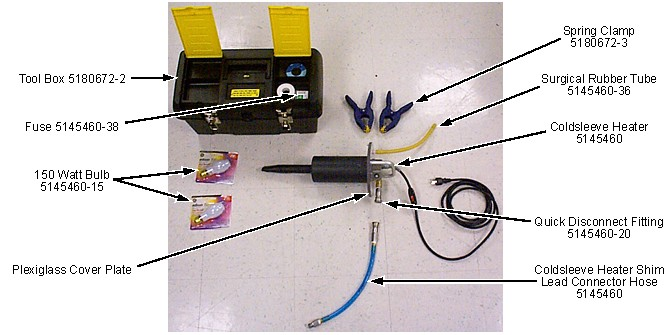
| ||||
| Potential Magnet Quench! | ||||
| Heating the Coldhead Sleeve to >275K may damage instrumentation wiring inside the magnet or lead to a magnet quench. | ||||
| Do not heat the Coldhead Sleeve to >275K. |
Warm the Coldsleeve's second stage to approximately 275K as indicated by the SI-410 Diode reading on the Magnet Monitor, Lakeshore 208 Digital Thermometer, or MTM-101 Handheld Magnet Temperature Meter.
Keep the Coldhead Sleeve at 275K, and check for helium gas flow through the 5.25 psig relief valve indicating the blockage has cleared.
| NOTE: | Frost on the cooling line and a hissing sound at the 5.25 psig relief valve mean helium gas is flowing. |
After heating for four (4) hours, reinstall the Coldhead in accordance with the Coldhead Replacement and the Coldhead Interface Adjustment subsections of Two-Stage Cryocooler Coldhead Replacement.
Return the magnet to C0BO operation, and observe cryostat performance.
Pressure may stay high for up to two days because the shields have warmed. The Recondenser should recover in one day.
C0BO operation will resume when the shield temperature is <45K.
Monitor the Recondenser Coldhead second-stage temperature difference (ΔT), as well as Coldhead performance, to verify ΔT is <0.2K and the second-stage Coldhead temperature is ≤4.3K.
If the Recondenser does not return to normal operation, proceed to the next section, Level Three Deicing.
If the Coldhead operation does not return to the operating specifications found in Magnet Electrical Checks within a few days, replace the Coldhead.
This Level Three Deicing procedure uses the same ice removal strategy as Level Two Deicing, but also forces warmed helium purge gas through the 40K shield cooling shield. Try Level Two Deicing before progressing to Level Three. (Level Two Deicing is performed while performing Level Three Deicing.)
| ||||
| Potential Magnet Quench! | ||||
| A magnet quench during Level Three Deicing could result in rapid expulsion of liquid helium through the Vertical Penetration. | ||||
| Make sure magnet is ramped down to zero field before starting Level Three Deicing. |
| ||||
| Potential Cold Burn Hazard! | ||||
| Exposure to Cryogens and contact with cold objects is possible during Level Three Deicing. | ||||
| Wear protective clothing, nonabsorbent gloves and goggles when performing Level Three Deicing. |
| ||||
Make sure:
| ||||
Ramp the magnet down to zero field in conformance with Magnet Rampdown to Zero Field.
Connect a helium gas cylinder (235 scf, 99.9995% pure) with regulator to a flexible gas hose.
Connect the gas hose to the copper coil heating apparatus using a 1/2 in. NPT fitting connected on the hose's exhaust end.
Connect another flexible gas hose with 1/2 in. NPT fittings at each end to the heating apparatus.
Illustration 19: Recondenser Purge Set Up
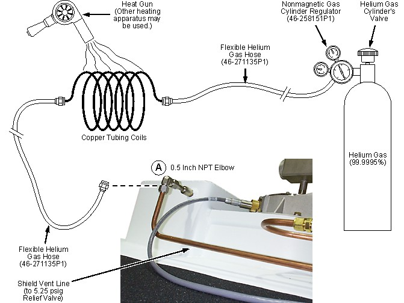
| ||||
| Fatal Explosive Hazard! | ||||
| Gas cylinder rupture/damage or opening cylinder valve fast will release 2400 psi gas from cylinder. | ||||
| Make sure gas cylinders are secure from falls and away from moving objects before using. Always open cylinder valve slowly. |
Make sure the regulator handle is backed out (CCW) to avoid regulator damage, then open the gas cylinder slowly. The high pressure gauge should indicate 2,100 to 2,400 psig (150 kg/cm2 to 170 kg/cm2) if the cylinder is full.
| NOTE: | Four full helium gas cylinders are required for Level Three Deicing. |
Open the cylinder valve, and set a low pressure gas flow at 1 psig. Purge the apparatus for one minute.
Disconnect the shield vent line at the Coldbox elbow at point “A" (shown in Illustration 16), and screw the gas hose's 1/2 in. NPT fitting into the elbow.
Open Vent Valve V2, then increase purge gas pressure to 0.5 psig. Listen for gas flow in the V2 lines to make sure gas continues flowing during the purge process.
Monitor cryostat pressure during the purge to make sure it is ≤0.3 psig. Use V2 to regulate pressure.
| ||||
| Do NOT allow the gas temperature to exceed 315K (180°F, 85°C) in the next step. | ||||
Heat the helium purge gas with the heating apparatus set up in Step 2 and shown in Illustration 19.
After a trickle flow of purge gas for five minutes, slowly increase the purge gas regulator pressure to 4 psig.
If gas flow is not present, the Recondenser may have an ice plug. Temporarily increase gas pressure to 10 psig to blow out any ice plug, then return to the 4 psig setting.
If an ice plug is still present, allow the Level Two Deicing procedure to warm the Recondenser at 275K for one hour, then temporarily raise the gas pressure to 10 psig, again.
Monitor the Recondenser RuO temperature using a RuO temperature monitor, MTM-101 Handheld Magnet Temperature Meter, or the Lakeshore 208 Digital Thermometer. Make sure the Recondenser temperature increases to at least 120K during the purge cycle. (This increase is due to warm helium purge gas and Coldhead warming.)
When the purge is complete, close valve V2, remove the gas line from the Coldbox elbow, and immediately reconnect the 1/2 in. shield vent line.
Remove the level two deicing apparatus.
Reinstall the Coldhead in conformance with the Coldhead Replacement and the Coldhead Interface Adjustment subsections of Two-Stage Cryocooler Coldhead Replacement.
Monitor the Recondenser/Coldhead second-stage temperature difference (ΔT), as well as Coldhead performance, to verify ΔT is <0.2K and the second-stage Coldhead temperature is ≤4.3K.
If the Coldhead operation does not return to the operating specifications found in Magnet Electrical Checks within a few days, replace the Coldhead.
If the Recondenser does not return to normal operation, continue to the next section, Level Four Deicing.
The fourth and most extreme Recondenser deicing procedure is a complete magnet warm-up and dry purge in conformance with Cryostat Warm-Up. Try Level Three Deicing before progressing to Level Four.
| ||||
| Make sure the Coldhead is off during Level Four Deicing to prevent any re-icing of purged contaminants in the Recondenser. | ||||
If Level Three Deicing has failed to deice the magnet, ramp down the magnet in conformance with Magnet Rampdown to Zero Field.
Warm and dry purge the magnet in conformance with Cryostat Warm-Up.
No finalization steps.